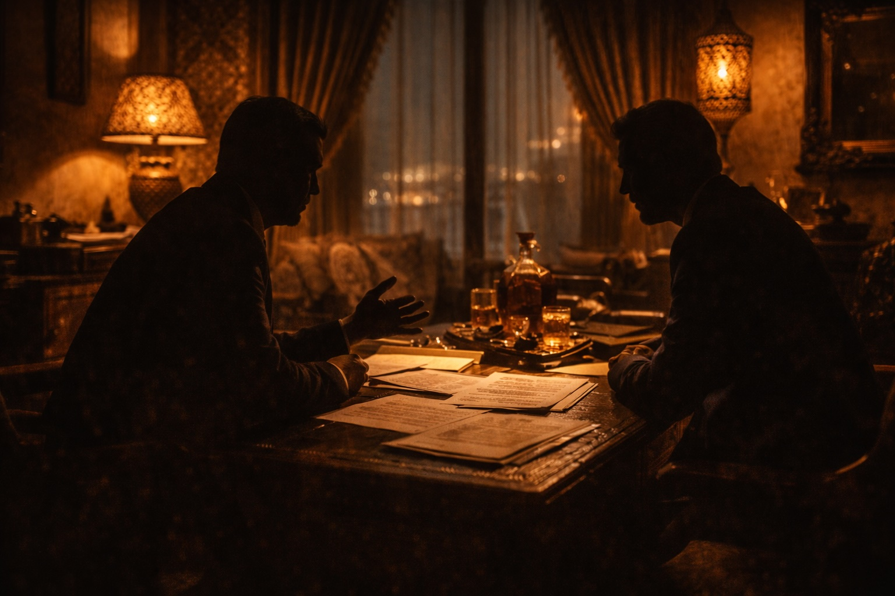

I always fancied a spar with the ‘Fake Sheikh’, but never thought I had the clients he would be interested in, until December 2013.
Akpo Sodje is a personal friend of whom I am fond. The National Crime Agency (NCA) had arrested him and his two brothers, Stephen and Samuel, following an undercover tabloid sting by Mazher Mahmood.
The NCA must have winced when Akpo asked for Nick Green. That said, the mere mention of my name must have convinced them that at least they had the correct people under arrest!
The Sodjes are a big sporting family of Nigerian decent but brought up in southeast London. Several of the brothers were professional footballers and one played professional rugby. They were all characters in their own right.
The case revolved around match fixing allegations and I sensed from the first whistle that this was Manchester United versus Torquay United at Old Trafford. I was sure the fake sheikh would be unable to survive the attacks I was planning to launch at his NCA-barricaded defences.
The launch of the NCA, which replaced the Serious & Organised Crime Agency (SOCA) in October 2013, took place weeks before the arrest of the three Sodje brothers. SOCA had been a disaster in tackling the ‘Mr Bigs’ partly because of infighting among the various law enforcement cultures. The NCA was supposed to be an improvement and trumpeted the Sodje arrests, even though the fake sheikh handed them the case on a plate.
Mazher Mahmood was also hungry for a big hit after the phone hacking scandal and Lord Leveson’s judicial inquiry into press standards in 2012 had pissed on his chips – that were once wrapped in the now defunct News of the World. Murdoch had closed the 168-year-old tabloid in July 2011 and rolled a few key staff into the newly created Sun on Sunday. Mahmood was one of those who News International, now rebranded as News UK, felt they needed to keep in the tent, pissing out.
His sting on the Sodjes was published in the an early December edition of the Sun on Sunday below the banner headline, FIXING IT’S EASY, which was allegedly something Sam Sodje had told the fake sheikh during various covertly recorded meetings in the UK and Dubai.
Sam, who had played for Portsmouth, Reading, Brentford, Leeds United, Notts County and Nigeria, was recorded apparently offering to fix a yellow card for £30,000, a red one for £50,000 and boasting he could ensure four players were booked during matches played over Christmas.
In a statement announcing the arrests, the NCA said it was working closely with the Football Association and the Gambling Commission to investigate a dossier of ‘intelligence’ the reporter had passed them in time-honoured tabloid fashion.
The NCA suspected the brothers were connected to Far East betting syndicates. The public was already gorging on similar match-fixing revelations about cricket.
Within 48 hours of the Sodje brothers’ release, on police bail pending further enquiries, they asked to meet me. Deploying counter-surveillance to shake off the paparazzi, the trio arrived at my home in Cheshire and during a three-hour conference the sad, sorry history was retold.
Critically, I wished to establish how Mahmood had infiltrated their lives. I noted, with a smile, that all disclosure by the NCA was post-August 2013 - the damning video in a London hotel suite being the high point.
As a criminal defence solicitor it always troubled me the way Mahmood’s secretly recorded ‘footage’ flashed on our television screens to promote the published story; the victims being trodden under foot in the haste to damn them, their lives in turmoil, careers in tatters, as the fully robed provocateur departed stage left into darkness to massive applause and already plotting his next trick.
My strategy was to burrow into the period before the covert footage of the Sodje brothers in the hotel room. Having conducted defences involving over twenty undercover police infiltrations and having at least one undercover operative sent into me, the Sodjes soon appreciated that Mahmood had set foot in the wrong cage. I was no fake lion like those celebrity or white-collar lawyers who roam the jungle fringes with their posh Home County roars.
But first, I needed to establish how confident my clients were in their innocence. How aggressively could I pursue disclosure of all the covert audio? I wanted no bullshit. No wandering down cul-de-sacs. Before I left the room for the brothers to confer, I recounted a story from my past, which I hoped would both shock and open their eyes to the world that they were now in.
Around 15 years earlier, I defended a man charged with murdering his ‘padmate’. He was alleged to have tied the inmate, with a bed sheet around his neck, to the cell door. The Crown alleged he then tugged on this man’s feet, letting gravity do the rest. The bizarre element to the crime scene was the presence of a Ouija board on the cell floor. I canvassed with my junior counsel, John Broadley, about the deployment of a supernatural defence linked to the ideomotor effect. His response:
‘Nick, your defences are all paranormal!’
Weeks into the case my firm had taken the reins. Surprisingly, the outgoing firm had not conducted a second post mortem, I wanted no digging if there was a chance forensic tests could backfire. I deepened my voice, slowed down my delivery and, staring into my client’s eyes, I asked if he wanted the body exhumed. There was a pause before I received a monosyllabic instruction:
‘Leave the corpse where it is, Nick.’
It is worthy of note the case headed to a jury trial at Sheffield Crown Court and it was the lovely (sadly missed) David Poole QC at the helm of our defence. He and John were good mates and were both colleagues in Cobden House Chambers.
We held a conference in those Manchester Chambers a week before the fixed trial date. It became a little heated when it became clear David had lined up, after discussion with prosecuting counsel, a plea to a lesser charge of “assisting a suicide”’.
‘How many years does that carry, David?’
‘14 years, Nick.’
‘Well you can forget that’, came my stern response.
John was smiling, as he sensed his learned QC (soon to rise to the status of High Court judge) was failing in the endeavour to bring the Blackpudlian on “board” for a quick conclusion to the murder case.
David raised his voice (somewhat) to stress it would not be Mr G serving life in prison if a jury brought back a guilty plea. My giggle displayed my QC’s attempts to corral me were doomed to failure, but I added, with a smile:
‘But of course, David – I fully accept it will be for the client to decide...and he alone.’
It transpired David had received instructions on a better paid fraud trial, which clashed with the Sheffield murder.
‘Well, David, do that!’
The conference ended with the decision to employ Cobden House’s head of chambers as our new QC. John and I decamped for a few beers at the Grey Horse Tavern (which I had coined the paedophile’s pub – don’t ask!), followed by a few bottles of wine and Cantonese delights at the Little Yang Sing. Good memories.
During the trial itself, our learned QC was making a total hash of cross examining the Crown’s pathologist. John, who is never one to usurp his role as junior, began to tug on the leader’s gown, in an effort to halt the crucifixion of our defence.
It was the High Court judge who came to our aide, by announcing:
‘It seems your junior is keen to speak with you. I will rise and the jury can have a short break. We will reconvene in 15 minutes.’
In those few minutes, John walked our QC through the terra firma to be trodden with the Crown’s expert. Upon renewing the cross examination armed with John’s questions, he reduced the Crown’s forensic evidence to rubble – they were holed below the neckline. A unanimous not guilty verdict was returned by the foreman of the jury. I texted David, utilizing the Ouija numbering: “Result from Sheffield: Murder – 0, Suicide – 1”. John and I proceeded to get hammered in a city centre hostelry.
After this salutary tale, I was pleased to learn when returning to the three Sodje brothers, they remained adamant I could ask the CPS for all recorded conversations and explanations for those which had not been recorded. This placed me in the driver’s seat. I could ram the accelerator pedal to the floor. However, one matter perplexed me. Why the Sodjes? They were hardly household names, such as Harry Kane, and none were playing in the Premiership.
I return to this important matter later. In the meantime, as it was pre-charge, I sought the advice of my good friend, Christopher Harding. A diligent, God-fearing barrister of weighty stature, Chris can of a Sunday morning be seen playing on the vicar’s organ rather than reading tabloid sleaze.
No doubt it amazes his colleagues how he has worked alongside me for many years. No doubt it also helps that he, like Jon Oultram, is fond of my rantings and can place them in context. Chris has a sense of humour and a breadth of vision. Unlike some, he does not sulk if his initial thoughts on evidence are misguided and need revisiting.
We drafted a detailed letter to the NCA setting out my clients’ contact with Mahmood, who according to the article had ‘posed as a middleman representing a syndicate of professional gamblers based in the Far East.’
My intention, fundamentally, was to make the NCA establish the existence of the betting syndicate that their hero, Mazher Mahmood, had infiltrated not instigated.
To do this, I needed to divert the NCA’s attention away from the hotel room where monies had unfortunately changed hands between my clients and the undercover reporter. I requested new disclosure. But as we were pre-charge the NCA had limited duties to co-operate. However, I knew the CPS would be on hand to advise, especially in light of the taped police interviews with the Sodje brothers.
Upon quiet reflection, I realised the focus of my disclosure should start with the red card issued to Samuel Sodje during a football match in February 2013, months before Mahmood had entered the fray. The incident, played and replayed on television, saw Sam punching an Oldham Athletic player in the nether regions.
Undoubtedly, it was a bit odd, but in reality it was unconnected to any betting scam. Yet, it appeared to explain why Mahmood targeted the Sodjes and the prosecution was now asserting that the red card was the inception of the alleged conspiracy.
Naturally, I called for the seizure of all mobile phone traffic - incoming, outgoing and cell siting- from the Sodje brothers and known associates in the run-up to and aftermath of the red card incident. I could only obtain outgoing calls, but under the Regulation of Investigatory Powers Act (RIPA) the police could obtain everything from the network providers. If my clients were lying to me, the disclosure would be damning to their case.
Leopards do not change their spots, so I knew that the NCA would not take kindly to Nick Green tasking them with necessary homework - particularly in the knowledge that I would be marking their efforts if charges were brought. However, I took care not to be seen demanding that the data be served on me, simply that it should be retained - especially as over time network providers wipe data.
I was proved correct. We could not even get an acknowledgment to our letter and, when the NCA did eventually respond it was only to say it would investigate as it deemed fit.
I took the fight to them by issuing a press release that was picked up by Sky Sports. I also ‘banked’ this wholly improper NCA response by making a formal complaint for later use before a jury should that become necessary. In the meantime I burrowed further into the origins of the tabloid sting.
*********
If this had been a police operation there should have been clear evidence of a betting scam prior to an undercover officer’s deployment. Other methods of law enforcement must have failed first. In the eyes of the law, to deploy undercover officers is a grave matter and appropriate in instances of organised crime.
Once a prosecution is underway there should be evidence in front of the judge of existing illegality, which the police infiltrated. This evidence can be presented in private during public interest immunity (PII) hearings with no defence present. In this way, there are checks and balances.
If the Fake Sheikh had created a crime, then he should be in the dock, and that’s why my letter to the NCA made a formal cross-complaint against the reporter for criminal acts.
The difficulty I faced was that the NCA had no appetite to investigate any alleged wrongdoing by the man who had not so long ago claimed to the Leveson inquiry to be behind over 250 successful criminal convictions.
My clients, the Sodjes, might go down I thought, but I wanted Mazher ‘king of the sting’ Mahmood to also grip the rail and be convicted. His footprint in this case could not easily be wiped.
Before the phone hacking scandal led to the closure of The News of the World, UK newspapers in the Murdoch stable were less concerned about being able to produce a paper trail justifying the public interest grounds for launching an undercover investigation or sting.
But in the new era, where Murdoch had to prove editorial integrity to his shareholders, the US government and Prime Minister David Cameron, who had launched the Leveson inquiry, a paper trail became the norm. In-house lawyers at the rebranded News UK became more hands on when they weren’t dealing with massive compensation claims from a raft of celebrities, some more deserving than others, for intrusions into their private life.
Consequently, in this so-called new era of responsible journalism, it followed that Mahmood would have had the clearest evidence of the presence of a large-scale betting syndicate prior to approval for him to don his thawb and keffiyeh and sting my clients.
I can do no better than I did at the time, and quote Mahmood’s own statement to the Leveson inquiry.This was a man who knew his duty and was conscious of his fate should he create crime. He knew the need to record ‘all’ meetings and conversations. The fact that no one landed a glove on him at the Leveson inquiry speaks volumes, as does the aggressive, evangelical tone in his statements.
The reality is that the relationship between Mahmood and the police has been symbiotic for years. Both have benefitted from their roles and Mahmood had extra protection under English law as a journalist.
I am not advocating journalists not being able to protect their sources. Press freedom is critical to the health of the democratic nation. I was anxious to point this out in my letter to the NCA, as I did not want to be portrayed as a neo-conservative. But all rights must be monitored, especially upon arrests instigated by individuals who set themselves up as virtuous individuals and whose status is capable of corrupting NCA processes.
I write this chapter against the ‘Leveson’ backdrop, where we might agree that limbs of the press were riddled with disease, and when criminal convictions have been secured against journalists and their ‘agents’ over the dark arts used for developing stories.
Mahmood believed that he was bullet-proof and to some extent had the police establishment on-side. Some did question his methods. Some even had the temerity to suggest that the Sheikh might have dabbled in the retrieval of voice messages.
The fake sheikh had successfully dribbled with the ball for many years, able to withhold the identity of his ‘sources’ from prosecutions. The sources were, in reality, outside the court process and could not be probed as to their integrity or even existence.
One can imagine the NCA wringing their hands in glee because Mahmood could act outside their lawful remit, unshack led by restraints. The police also didn’t have to pay one penny for News UK’s stings, nor ensure the requirement under the Criminal Procedures and Investigations Act (CPIA) to secure all material for possible disclosure.
The deception was breath-taking and, I concede, beautifully engineered. What could trump the fruits of Mahmood’s endeavours? Four aces on the card table? A pink rabbit pulled from the hat?
So with the Sodje brothers I wanted to stress the need for natural justice, for due process. I based this on the premise that a citizen targeted in the absence of a lawful police operation should be entitled to see prior evidence of the clearest, criminal conduct. This shouldn’t represent a high bar but something the CPS itself demands. For the prosecution to simply take the word of a fake sheikh is wholly improper. It castrates the role of a judge who, equally, will be left in the dark, all the while accepting Mahmood’s right to protect his source. This is corrosive given that his motivation is a headline, glory and a pay cheque.
*********
Little did I know, the NCA and CPS were beavering away with the disclosure tasks I had set them. The first I learnt about it was when I received animated calls alerting me that my clients had been re-arrested. This, itself, was abusive and wholly improper given the NCA and CPS knew I was acting for them and they could have attended voluntarily. But it looked like, having been passed the baton from the Sheikh, the NCA wanted further publicity.
My trap was sprung though, and I could not have wished for a better outcome to my letter. The NCA was shackled to their man from News UK and had gone in search of the betting syndicate. If there was one, we were knackered. If it didn’t exist, the NCA would never win the case.
Also arrested with the Sodje brothers were footballers from Preston North End. They were not culpable, having merely received yellow or red cards when Samuel Sodje was a player at the club. They were all of good character and faced inane questioning based on the mobile phone data I had asked the NCA to secure, starting with the day Sam Sodje received that infamous red card.
‘Why did you phone Sam Sodje the night before the match? Why did you receive a call from him on the morning of the match? Why did you call him in the evening after the match?’ The questions went on and on. In truth, the telephone traffic was between friends and teammates about getting lifts before and after matches.
It was a staggering abuse of power. The NCA had lurched down a blind alley, clutching telephone data. I had nutmegged them and an empty net beckoned.
For in all the mobile data, the NCA had not one shred of evidence to support the existence of a betting syndicate. They were clutching the pink rabbit realising they’d been ‘had’.
***********
By now I believed I’d established why the Sodje brothers were targeted by the fake shiekh. Stephen Sodje owned a company which organised charity football matches. The brothers’ links to the football world were many and varied so they had a database of ex-footballers, including many ex-internationals, willing to take part in such matches.
It was the perfect vehicle for the fake sheikh’s sting. Mahmood portrayed himself as CEO of a successful company in the Middle East who was anxious to arrange a match on Dubai’s wealthy shores. Mahmood worked with a woman who posed as his personal assistant. She had made many calls to Stephen, and I smiled when he told me that she was never available when he called - it would always be a call back from her and, hence, recorded.
This woman (who I still believe may be a police or ex-police officer) arranged an all-expenses paid trip to Dubai for the Sodjes to meet the ‘CEO’ and discuss in more detail the proposed charity match. You’ll appreciate that I cannot quote from any conversations with the Sodjes as no transcripts have ever been disclosed.
Critically, Stephen said the personal assistant’s focus was initially on Michael Chopra, a footballer who had played in the Premiership and had his own travails with the press. Suffice to say, Chopra was a defence witness at Newcastle Crown Court where the footballer, a gambling addict, was able to account for the legitimacy of a large sum of money in the hands of the drug gang on trial.
To the Sodjes this meant nothing. That is how successful undercover operations work. I noted that in the limited disclosure and in all the taped interviews Chopra’s name was absent. Airbrushed is probably a better word.
In my assessment, Mahmood had Chopra as his intended victim and his personal assistant had kept stressing the importance of this man being on the plane to Dubai. If the reporter was not creating a crime, why would they be nominating the individual of interest? You may conclude that this must have been because of the friendship between the Sodjes and Chopra. But this did not exist. The brothers had never even called him once. This would be proven in all the telephone data in the NCA’s sweaty mitts. So how could this fit in with the Sodjes being part of an existing betting scam?
It got worse for the king of the sting. Stephen said he told the personal assistant that he wouldn’t contact Chopra. Compared to the ex-internationals Sodje could recruit, Chopra was a nobody whose football club would be unlikely to release him anyway.
The personal assistant’s insistence came to nothing and it was patently clear that this is when the Sodjes became the target of the sting. Mahmood had gone to too many lengths to set this up and The Sun on Sunday still needed their headline.
The plane took off for Dubai where the Sodje brothers were wined and dined. Until this point, any ‘fixing’ of matches had not been mentioned but, in his Burj Al Arab hotel suite, the Sheikh floated the idea. Dropping it into conversation, he asked whether penalties during charity matches could be awarded when not merited. No problem, the Sodjes confirmed - being for charity, the more crowd excitement the better. After all, the players were putting on a ‘show’.
But for the Sheikh this was the ‘in’ he had hoped for and back in the UK the opportunity was twisted to ‘set up’ the Sodje brothers. After all, who was interested in hearing the build up or indeed the truth? There was no recording of the conversation in theDubai hotel suite.
I could have withheld this information until charge as there is no onus on the defence to engage with the detail until there are court proceedings - especially involving matters not the subject of police questioning. The Sodjes, however, were rightly keen to avoid charges being laid and demanded a more robust approach. The ‘hold it back’ advices given by counsel are regularly without merit. The reality is that most, if not all, would have to be divulged in any Defence Case Statement anyway.
Mahmood should have retained all the conversations with my clients. I raised it now so if the matter ever got before a judge then prosecution cries of ‘fishing expedition’ would be baseless because we set sail before the charge sheet was nailed to our mast.
As is my wont, I went a stage further and decided to make contact with Chopra, who played for my hometown side, Blackpool FC. Through my contacts a word was whispered in his ear. It was only correct he got a heads up.
I knew my call to Chopra would be monitored by the NCA. I was keen that he instructed a solicitor to take umbrage with how the Sheikh had attempted to draw him into the fray. But I sensed Chopra was disinterested, though I agreed to make myself available should he want to meet with a solicitor. The exchange and follow up text was open and transparent. But I heard nothing back.
I penned another detailed letter to the NCA to flush out Chopra and the sheikh’s personal assistant, knowing that this would trouble the CPS. The senior prosecutor advising the police had a duty to establish why Chopra was absent from the case papers.
While I waited for a response, the fake sheikh’s integrity, methods and relationship with law enforcement was getting a fatal battering from another corner of the criminal justice system.
************
Before Mahmood turned his attention on my clients, it was the turn of former X Factor judge and N’Dubz singer Tulisa Contostavlos. In June 2013 she was arrested for allegedly agreeing to supply cocaine to the undercover reporter posing as an Arab film executive.
Once again the CPS and police accepted his evidence and the singer stood trial in July 2014, just as the Sodje brothers were waiting to see if they would be charged.
But mid-trial, the judge ended Tulisa’s ordeal because there were ‘strong grounds’ to believe Mahmood, the main prosecution witness, had ‘lied’ at an earlier hearing. The lie involved an attempt by the reporter to manipulate the exculpatory evidence of another member of his team.
This was interesting because of the mysterious undercover role of his personal assistant who’d arranged meetings with the Sodje brothers but was absent from the case papers. The NCA and CPS had still not responded to me on that and other points raised in my two letters. The NCA also refused to say when they became involved with Mahmood over the Sodjes? Was it pre-Dubai? After all, the NCA had effectively allowed Mahmood to dribble at the heart of the Sodjes’ defence. Was all this a police-sponsored sting, I wondered.
After Tulisa’s trial collapsed, The Sun immediately suspended Mahmood and the CPS was under pressure to consider charging him with perverting the course of justice. They were also forced to review past convictions based on evidence supplied by ‘the king of the sting’ and cases, like my clients, who’d been arrested but not yet charged.
A judge had faced down Mahmood, despite the CPS and police support. The judiciary was finally placing clean water between it and the Fake Sheikh’s brand of journalism. As I have stressed throughout this book, once the judiciary steps up to the mark, the whole legal system benefits. It was ruthless, but long overdue.
In reality, the CPS, complicit in all these prosecutions, are the last people who should have been tasked to review Mahmood’s greatest hits. There should be another public inquiry, given the lives that he has affected and his closeness with the police, who hid behind his robes then basked in the reflected glow of the front page GOTCHA!.
The first direct impact of Mahmood’s defenestration on the Sodje brothers was when their bail was lifted. Then in January 2015 the CPS dropped the case.
The moral in the end is rather simple and one the judiciary should have reached a long time ago. Mahmood is a hack not a law enforcement officer and his only motivation was a headline.When the judge realised this truth, he released the king of the sting back to the bowels of Murdoch’s empire, sheikhing, rattling and rolling his way to prison.
For in October 2016, Mahmood was jailed for 18 months for conspiring to pervert the course of justice during the Tulisa trial. Her solicitor said at the time, ‘the real scandal is that Mahmood was allowed to act as a wholly unregulated police force investigating crimes without the safeguards which apply to the police.’
The NCA continued investigating the Sodje brothers but I had no more to do with them.
In 2017, Efe, Stephen and Bright Sodje were jailed for siphoning tens of thousands of pounds from the family sports charity they’d set up to help poor Nigerian kids.
And in 2019, Sam was cleared of money laundering. As for Akpo, who was wanted for questioning, he ended up in the land of real sheikhs - Dubai.
Page 1 of 1